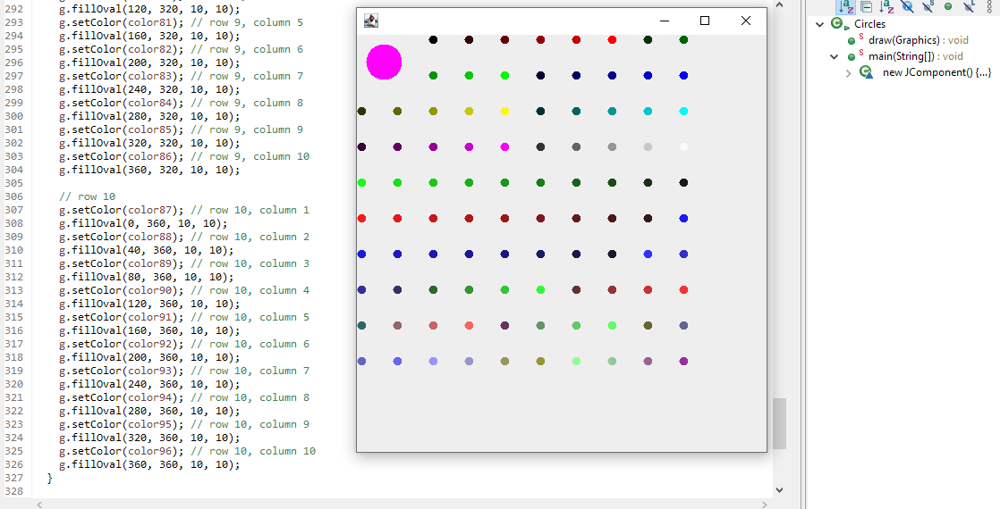

In every profession, workers will equip themselves with the tools that improve their efficiency and quality of work. Photographers use lights, lenses, and even photo editing software. Artists use various art supplies, tablets, and digital art software. But what about a programmer that specializes in UI (user interface)?
At the foundation, HTML and CSS are programming languages used to create web pages. HTML provides the structure and CSS is used for styling. With just those two programming languages alone (and a large amount of effort), you can create any web page that you are able to imagine. However, there are even more ‘tools’ that a UI programmer can use to elevate their work.
Frameworks such as Bootstrap 5 and Semantic UI can be implemented into HTML and CSS programming. Similar to the Java library, many skilled and experienced programmers came together and created presets, then loaded those into the frameworks. Web developers can use those presets within the frameworks rather than building every element individually from scratch. This vastly saves on time and effort, improving the efficiency of the work.
When I first started programming, I was given an assignment to create a grid of 97 colored circles. Instinctually I decided to hard code each circle, writing about 3 lines per circle for a total of 351 lines of code. After finishing this task, I mentioned my solution to my classmate and I learned that for loops exist. I created another version of the assignment in less than 30 minutes compared to the 3 or so hours that I had spent on my first version.

Since that incident, I’ve vowed to learn as much as I could to improve my skill. I’ve learned the programming languages Java, C, C++, JavaScript, HTML, and CSS. IDEs such as Eclipse IDE, JSFiddle, and IntelliJ IDEA were added to my toolkit. I even spent one semester primarily coding in TextEdit and transferring that to vi within the terminal. As someone who is interested in UI design, UI frameworks will be a valuable addition to my toolkit and I plan on utilizing them throughout my career.